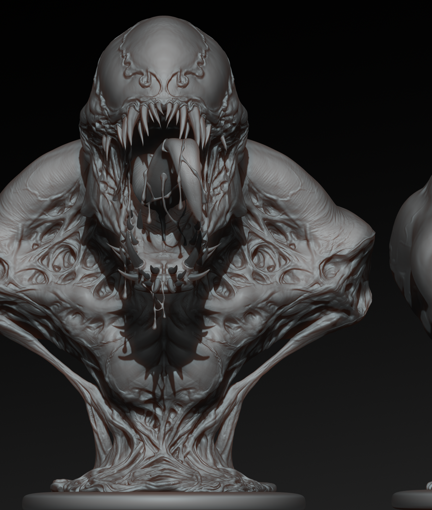
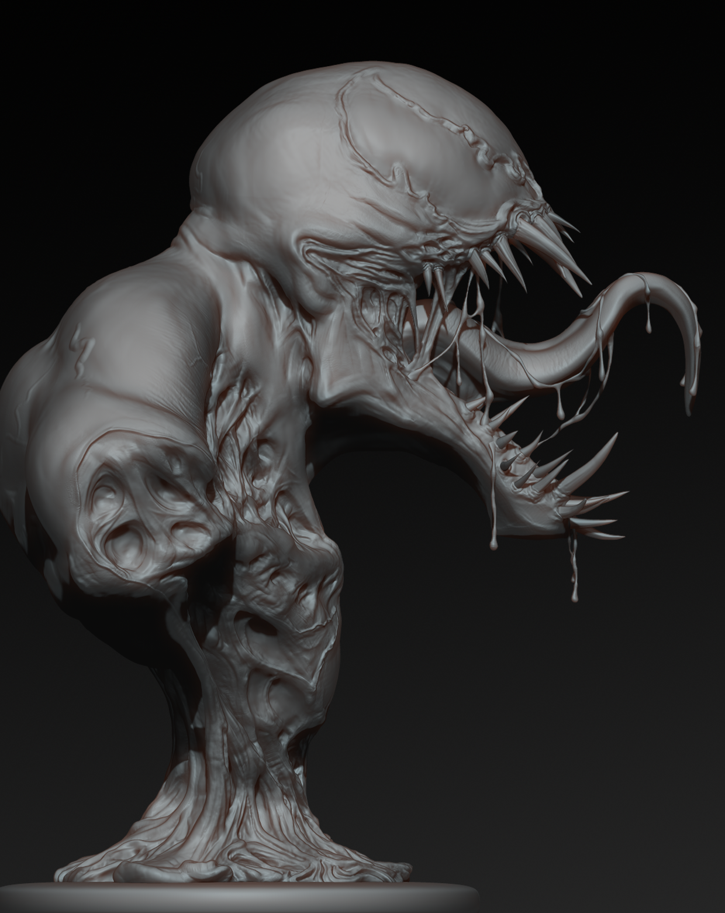
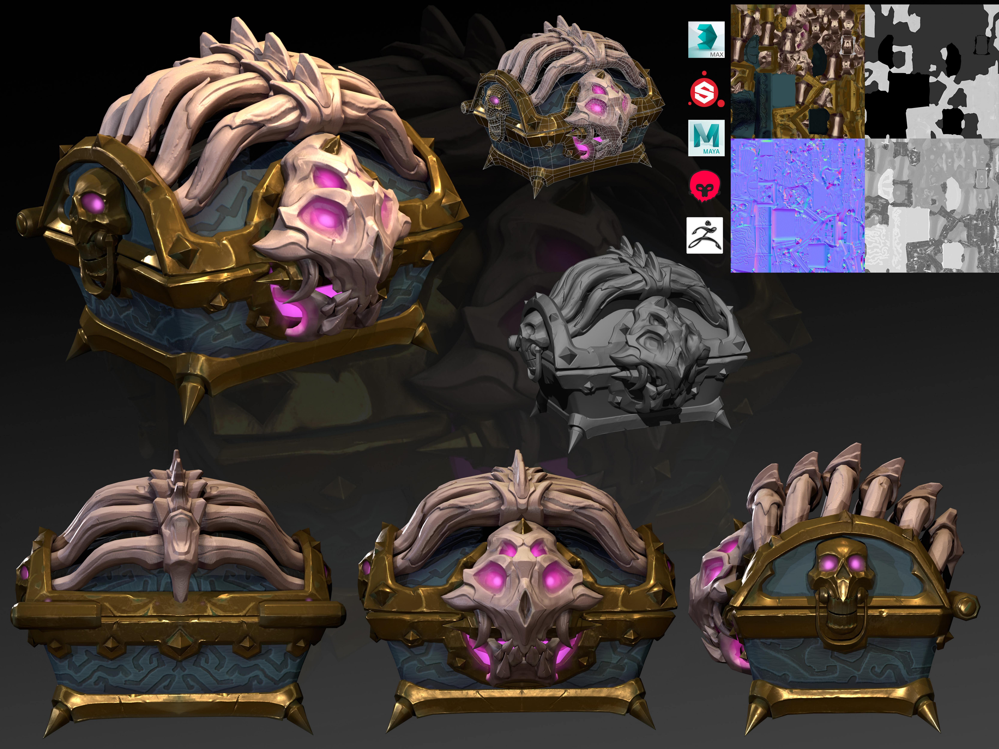
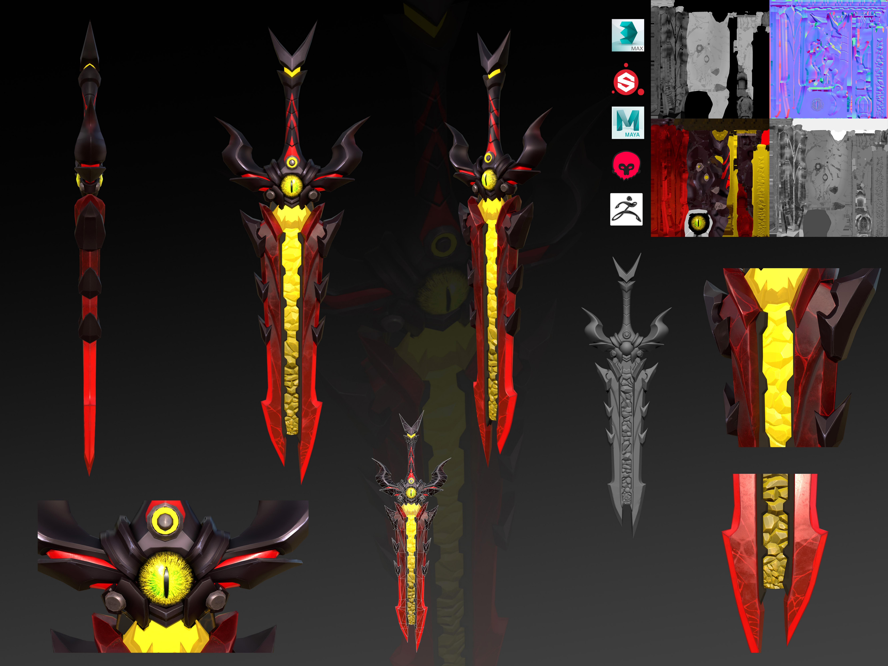
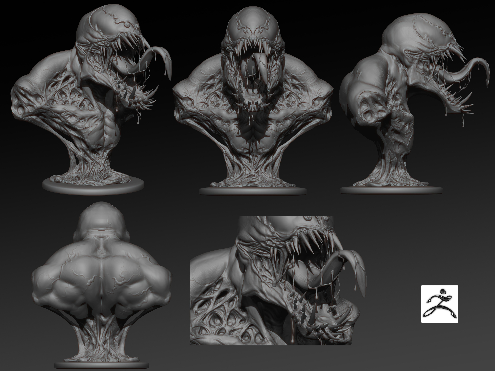
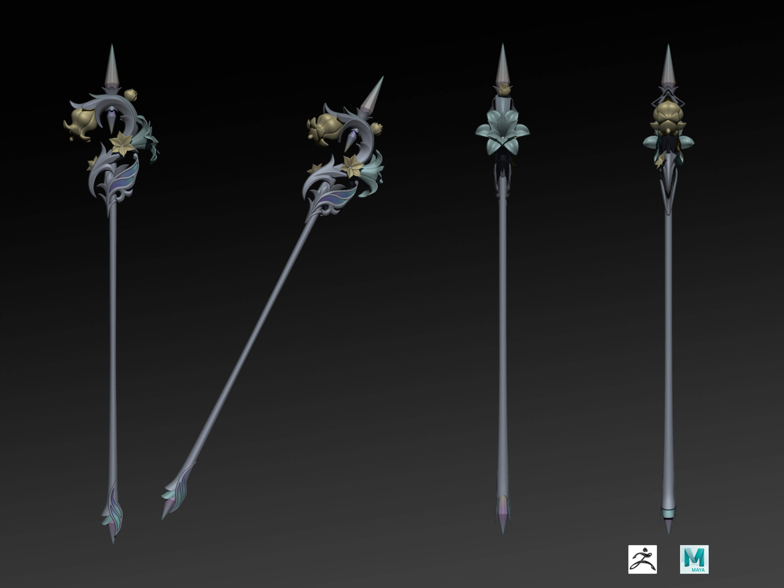
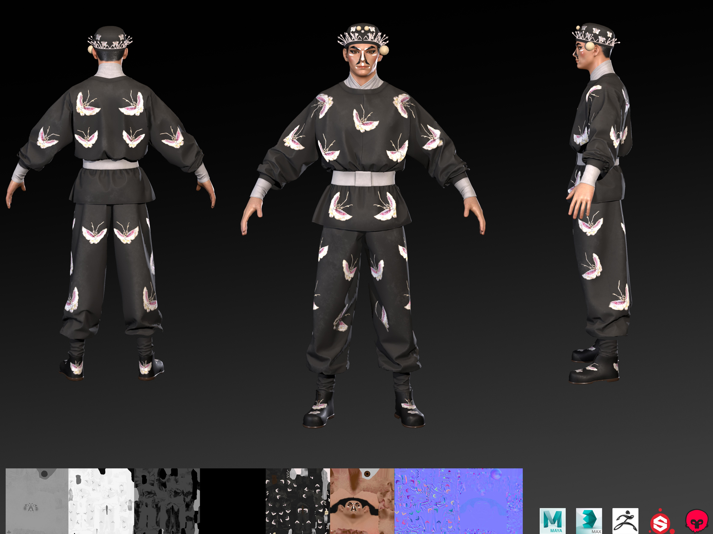
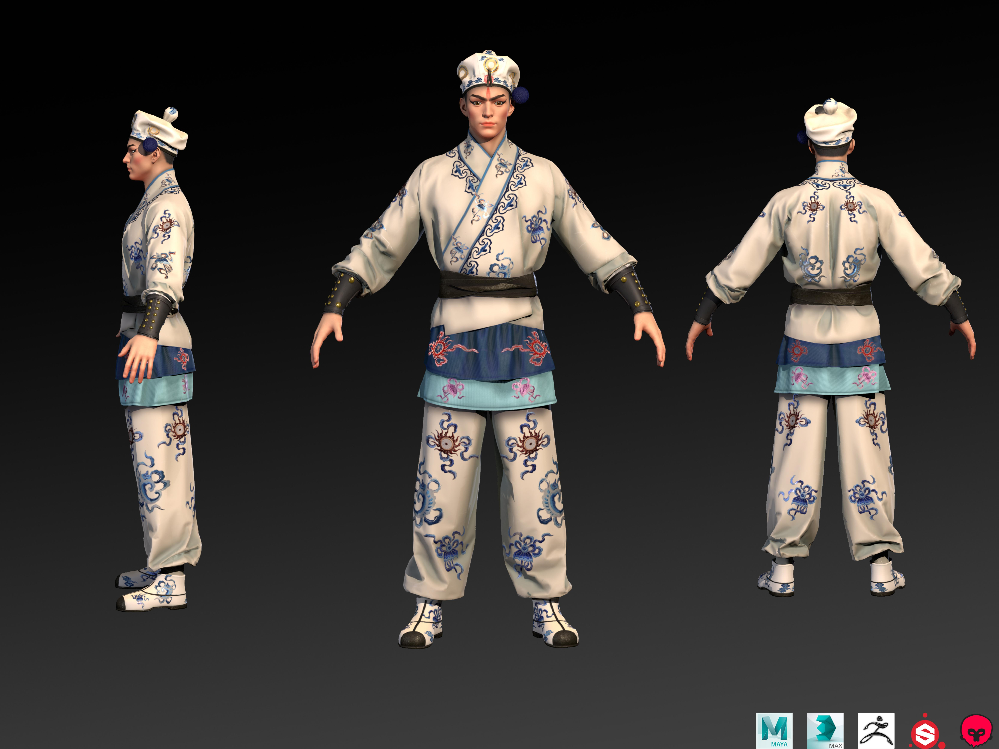
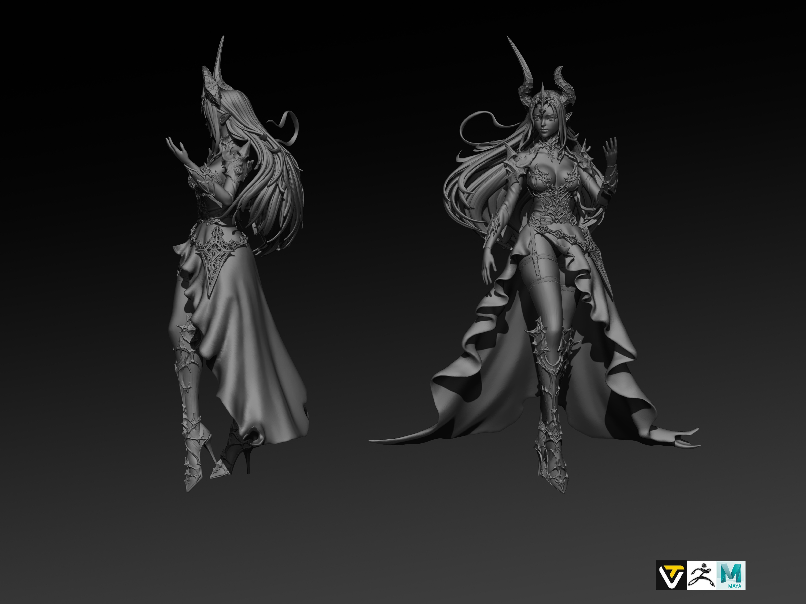

角色与怪物雕塑
ZBrush 高模细节、传统戏曲角色形体、服饰、脸谱等程式化特征还原。
Creature Sculpt / Character Modeling
聚焦角色雕塑、怪物设定、PBR 资产制作与游戏美术落地。作品以形体张力、肌理细节和可交付管线为核心。



Selected Works
以下内容来自你提供的 7 页作品集 PDF，已转换为网页画廊形式。







Pipeline
ZBrush 高模细节、传统戏曲角色形体、服饰、脸谱等程式化特征还原。
Substance Painter、Marmoset Toolbag 3，完成材质绘制、烘焙和光影调试。
TopoGun 2、Rizom，用于低模拓扑、UV 拆分、精度分级和实时渲染适配。